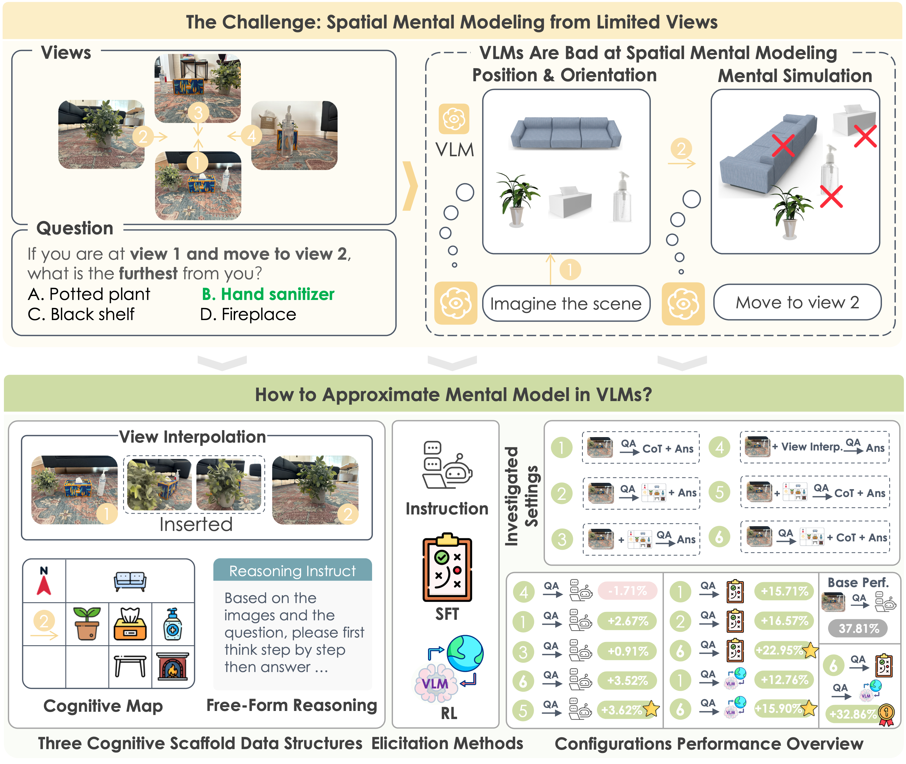
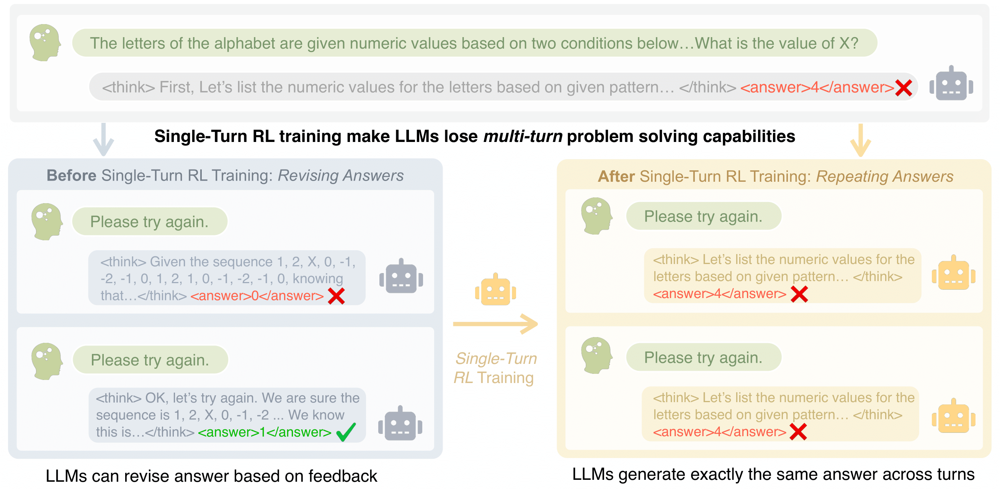
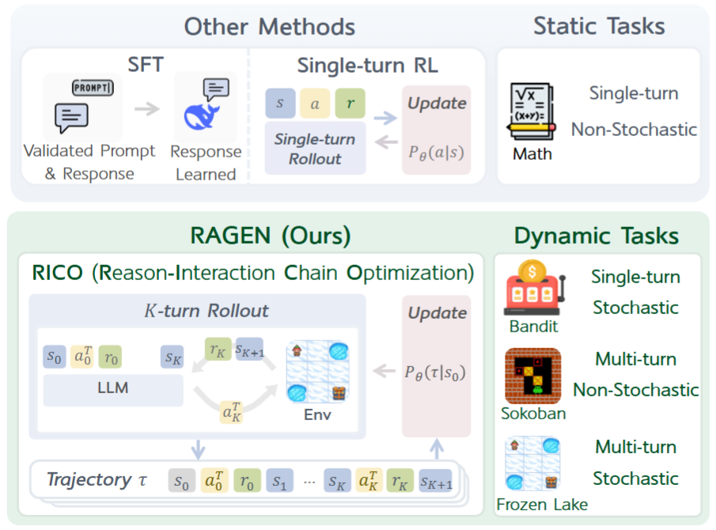
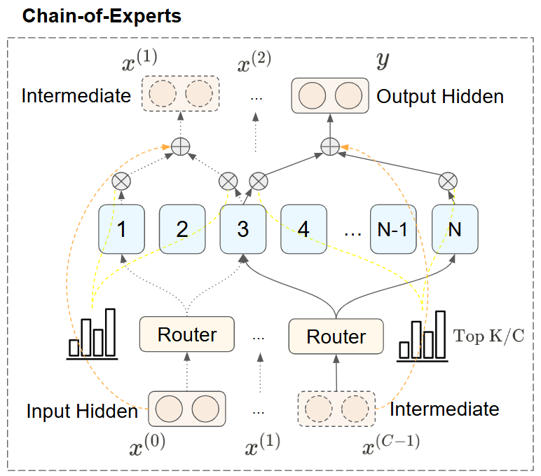
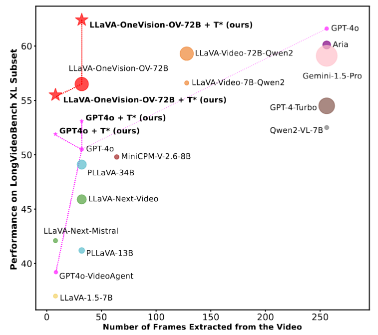
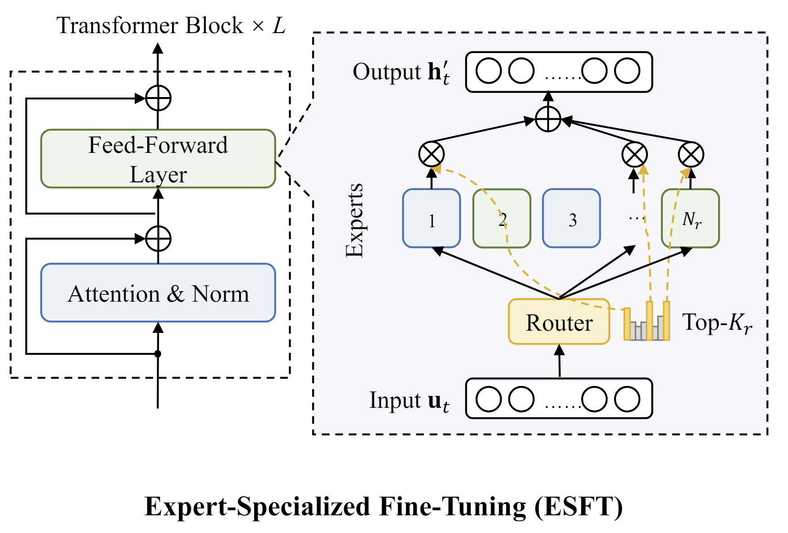
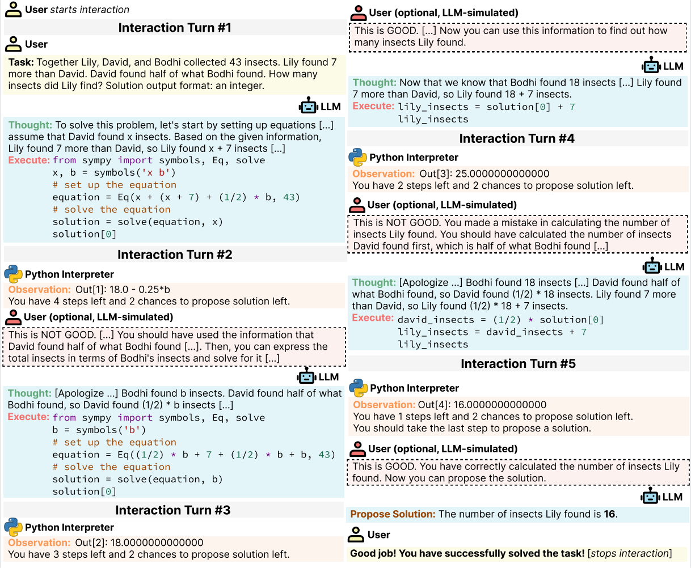

|
I am a CS PhD student at
Northwestern.
I am fortunate to be advised by the wonderful
Manling Li.
Email /
Github /
Semantic Scholar /
Zhihu /
CV
|
{kind=link}
|
|
The growth of foundation models, while extremely rapid, has heightened the need to address the challenges arising from their expanding scale. My research focuses on foundation models' autonomy (RAGEN, MINT benchmark), efficiency (DeepSeek-V2, Expert-Specialized Tuning, Chain-of-Experts), and long-context understanding (Long Video Haystack&T*, RETA-LLM). |
See full list on Google Scholar or Semantic Scholar (Why I Love Semantic Scholar, and You Might Too)
Semantic Scholar uses AI-powered tools to summarize papers, highlight key phrases, and rank research by influence. This helps you find important studies faster. Its Semantic Reader helps you understand papers with skimming highlights and citation cards . You can also see how papers connect with citation graphs. While Google Scholar is great for broad searches, Semantic Scholar is smarter for finding high-quality and impactful research!
|
|
Kangrui Wang*, Pingyue Zhang*, Zihan Wang*, Yaning Gao*, Linjie Li*, Qineng Wang, Hanyang Chen, Chi Wan, Yiping Lu, Zhengyuan Yang, Lijuan Wang, Ranjay Krishna, Jiajun Wu, Li Fei-Fei, Yejin Choi, Manling Li NeurIPS 2025 [Project Page] [Paper] [Docs] [Code] [Blog] [X Post] 
VAGEN trains vision-language agents with explicit world-model reasoning and bi-level reinforcement learning, stabilizing credit assignment in sparse multi-turn environments while improving success on control, navigation, and manipulation benchmarks. |
|

|
Baiqiao Yin*, Qineng Wang*, Pingyue Zhang, Jianshu Zhang, Kangrui Wang, Zihan Wang, Jieyu Zhang, Keshigeyan Chandrasegaran, Han Liu, Ranjay Krishna, Saining Xie, Manling Li, Jiajun Wu, Li Fei-Fei Best Paper @ ICCV 2025 SP4V, The Best of ICCV featured by Voxel51 [Project Page] [Paper] [Code] [Dataset] [X Post] 
MindCube curates 21K spatial reasoning questions over 3K scenes and shows that guiding VLMs to map-then-reason boosts accuracy from 37.8% to 70.7%, highlighting cognitive mapping and reinforcement learning as keys to spatial mental modeling. |
|

|
Licheng Liu*, Zihan Wang*, Linjie Li, Chenwei Xu, Yiping Lu, Han Liu, Avirup Sil, Manling Li Preprint 2025 [Project Page] [Paper] [Code] [X Post] 
Unary Feedback as Observation (UFO) shows that minimal prompts like “try again” keep single-turn quality while improving multi-turn accuracy by up to 14%, delivering a plug-and-play RL recipe for reflective reasoning agents. |
|

|
Zihan Wang*, Kangrui Wang*, Qineng Wang*, Pingyue Zhang*, Linjie Li*, Zhengyuan Yang, Xing Jin, Kefan Yu, Minh Nhat Nguyen, Licheng Liu, Eli Gottlieb, Yiping Lu, Kyunghyun Cho, Jiajun Wu, Li Fei-Fei, Lijuan Wang, Yejin Choi, Manling Li Open Source Project [Homepage] [X Post] [Paper] [Code] [Poster](Best Poster @ MMLS 2025) 
We introduce RAGEN built upon the general multi-turn RL framework called State-Thinking-Actions-Reward Policy Optimization (StarPO) to train LLM reasoning agents via RL in multi-turn, stochastic environments. We observe how and why models would collapse in multi-turn RL, and show several limitations of agent reasoning under current RL paradigms. |
|

|
Zihan Wang*, Rui Pan*, Jiarui Yao, Róbert Csordás, Linjie Li, Lu Yin, Jiajun Wu, Tong Zhang, Manling Li†, Shiwei Liu† arXiv Preprint [Paper] [X Post] [Blog] [Code] 
We propose Chain-of-Experts (CoE), enabling sequential communication between MoE experts by processing tokens through multiple intra-layer iterations. CoE achieves 17.6–42% lower memory usage and reduces validation loss on Math benchmarks from 1.20 to 1.12 under comparable compute. |
|

|
Jinhui Ye*, Zihan Wang*, Haosen Sun, Keshigeyan Chandrasegaran, Zane Durante, Cristobal Eyzaguirre, Yonatan Bisk, Juan Carlos Niebles, Ehsan Adeli, Li Fei-Fei, Jiajun Wu, Manling Li CVPR 2025, Oral@ICCV 2025 LongVid-Foundations, Featured by Stanford AI Blog [Project Page] [X Post] [Dataset] [Paper] [Code] [Stanford AI Blog] [Demo] [Poster] 
We introduce LongVideoHaystack, a 480-hour video temporal search dataset with 15,092 human-annotated instances, where SOTA scores 2.1% Temporal F1. Our temporal search framework T* boosts GPT-4o from 50.5% to 53.1% and LLaVA-OV from 56.5% to 62.4% on LongVideoBench XL. |
|

|
Zihan Wang, Deli Chen, Damai Dai, Runxin Xu, Zhuoshu Li, Yu Wu EMNLP 2024 [Paper] [Code] 
We harness the Specialized Power of Experts in MoE LLMs through ESFT. By fine-tuning Down to 5% Experts in a layer, near-full performance can be achieved. |
|

|
Xingyao Wang*, Zihan Wang*, Jiateng Liu, Yangyi Chen, Lifan Yuan, Hao Peng, Heng Ji ICLR 2024 [Paper] [Project Page] [Code] 
We introduce MINT, a benchmark for evaluating LLMs in Multi-turn Interactions with tools and language feedback. MINT reveals several limitations in existing RLHF and SIFT methods on multi-turn interaction. |

|
DeepSeek AI (157 authors including Zihan Wang) [Paper] [Code] 
DeepSeek-V2 is a strong MoE model with 23B activated parameters. It achieves stronger performance compared to DeepSeek 67B, saving 42.5% training costs and boosting generation by up to 5.76x. |
|
|
|
|
|
|
Website design from Jon Barron |